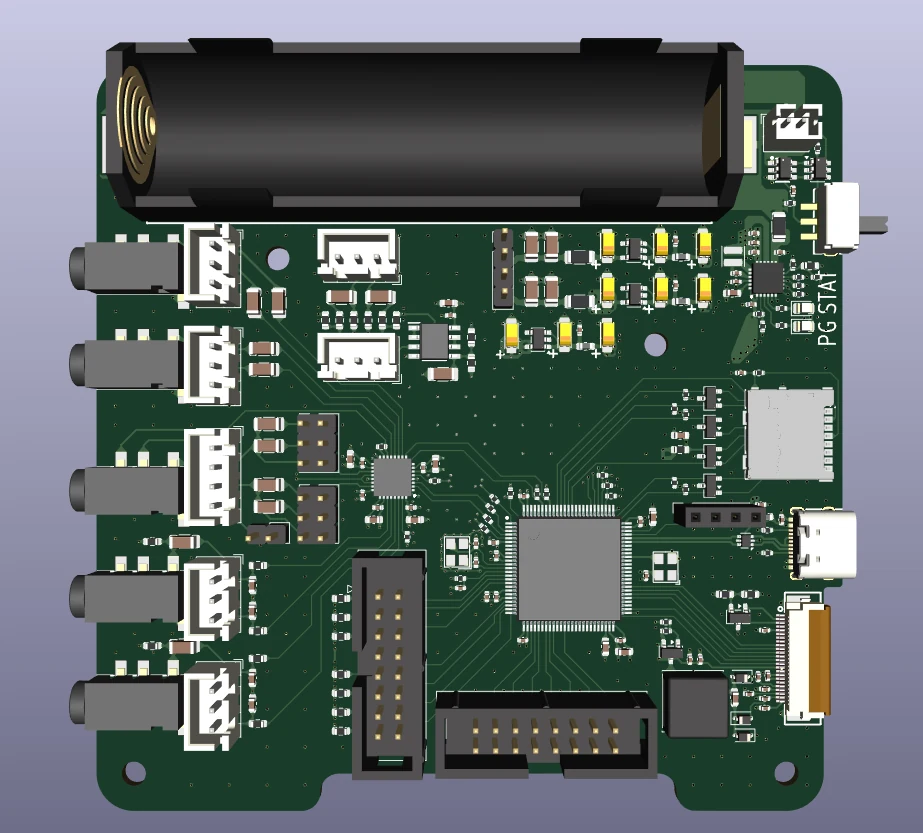
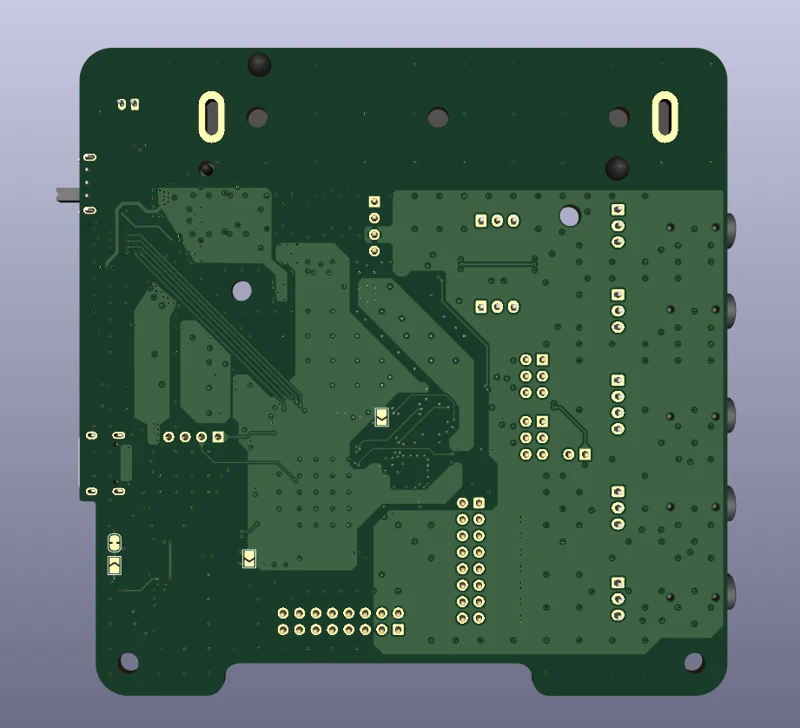

AUDIO DSP / EMBEDDED
STM32H7 audio development board
A portable audio-development platform combining an STM32H7, audio codec, storage, battery charging, and a display interface.

Project overview
I designed this board as a flexible platform for embedded audio development. An STM32H7 microcontroller works with a TLV320 audio codec, while storage, power management, and a display connection support portable applications.
Unlike the shared SigmaDSP module, this platform brings audio processing into the STM32 software environment. The supplied material documents revision 0 of the PCB and its CAD assembly.
System & specifications
| Microcontroller | STM32H7 |
|---|---|
| Codec | TLV320AIC3104 |
| Audio interface | Serial audio connection and I²C codec configuration |
| Storage | MicroSD card interface |
| USB | Full-Speed data connection and charging input |
| Portable power | Rechargeable battery interface and charger |
| Display | Dedicated E-Ink display connector |
| PCB | 4-layer stack-up documented in the schematic |
Hardware & development interfaces
The schematic groups the design into microcontroller, codec, USB/power, SD card, and display blocks. Analog input conditioning supports different source levels, and the output path provides audio connections for development.
Local codec decoupling, audio clocks, and separate supply nets support the mixed-signal architecture. The board also exposes debugging and peripheral connections to make firmware bring-up accessible.
Portable audio architecture
Storage can hold recordings, presets, configurations, or impulse-response data, depending on the firmware developed for the board. Battery charging and the E-Ink interface create options for a self-contained device without tying the design to one finished product.
Current state. Revision 0 is documented through front and back CAD views, schematics, and a STEP assembly. Fabrication, firmware bring-up, and bench performance are not documented in this case study.
Front & back CAD views



Select an image to enlarge it.
Interactive 3D model
Inspect the board from every angle.
Load the board assembly to inspect component placement and connectors.
Converted from the supplied revision 0 STEP assembly. Rotate and zoom to inspect the component arrangement.
Documentation & CAD
Source: CV portfolio description, supplied schematic, and revision 0 CAD. A project year is not explicitly attached to this board in the CV.